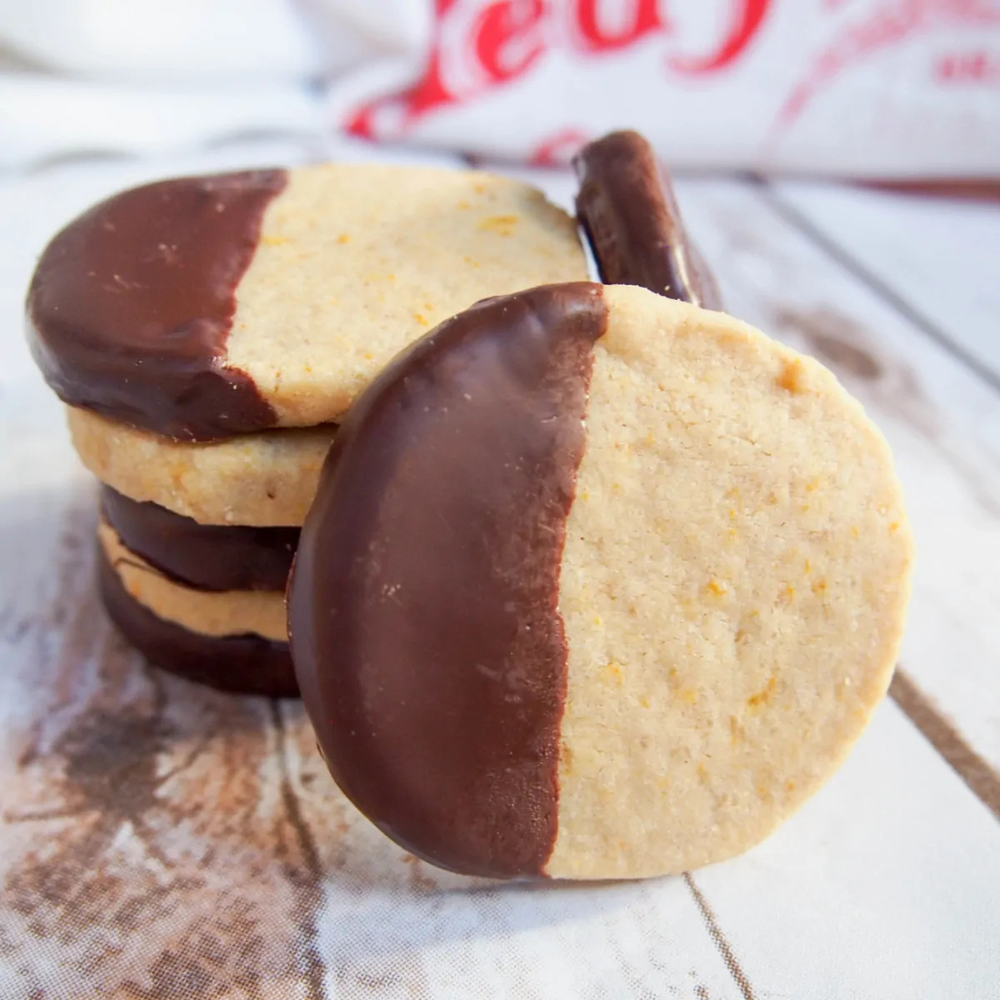

Chocolate Orange Shortbread Cookies

Description
This recipe comes from the 2023 WE Energies Cookie Book and was submitted by Alice Boziel from the Franklin
Police Department.
Alice writes, "I have been an emergency dispatcher since 1989, serving the Cudahy and Franklin police departments. My
grandma was my inspiration for baking. Now my family, friends and co-workers get to enjoy my treats."
Ingredients
- For the Dough
- 1 Cup Butter (softened)
- 2/3 Cup Powdered Sugar
- 2 Tablespoons Orange Zest
- 1/2 teaspoon Orange Extract or Juice
- 2 1/4 Cups Flour
- 1/2 teaspoon Salt
- For the Coating
- 2 Cups Chocolate Chips (dark is preferred)
- 2 Tablespoons Shortening
Steps
- In large mixing bowl, cream butter and powdered sugar. Using a silicone spatula, scrape
down the sides and bottom of the bowl.
- Add zest and extract; beat until light and fluffy, about 3 to 5 minutes. Wipe down the
sides and bottom of the bowl
- In separate bowl, whisk flour and salt.
- Add dry ingredients to butter mixture, mixing until well combined.
- Form dough into ball; place onto lightly floured surface and knead until smooth. Shape
dough into 12x2-inch log. Wrap log tightly in plastic wrap chill 2 hours, or overnight.
- Preheat oven to 325 degrees F. Line a baking sheet with parchment paper or a silicone baking mat.
- Slice dough into 1/4-inch rounds; place 1 inch apart on prepared baking sheet.
- Bake for 15-17 minutes or until cookies are firm.
- Cool 5 minutes on baking sheets; transfer to wire cooling racks.
- In small saucepan over low heat, melt chocolate chips and shortening; stir to combine.
- Dip each cooled cookie halfway into melted chocolate, allowing excess to drip off. Place on
wax paper lined baking sheets to set.